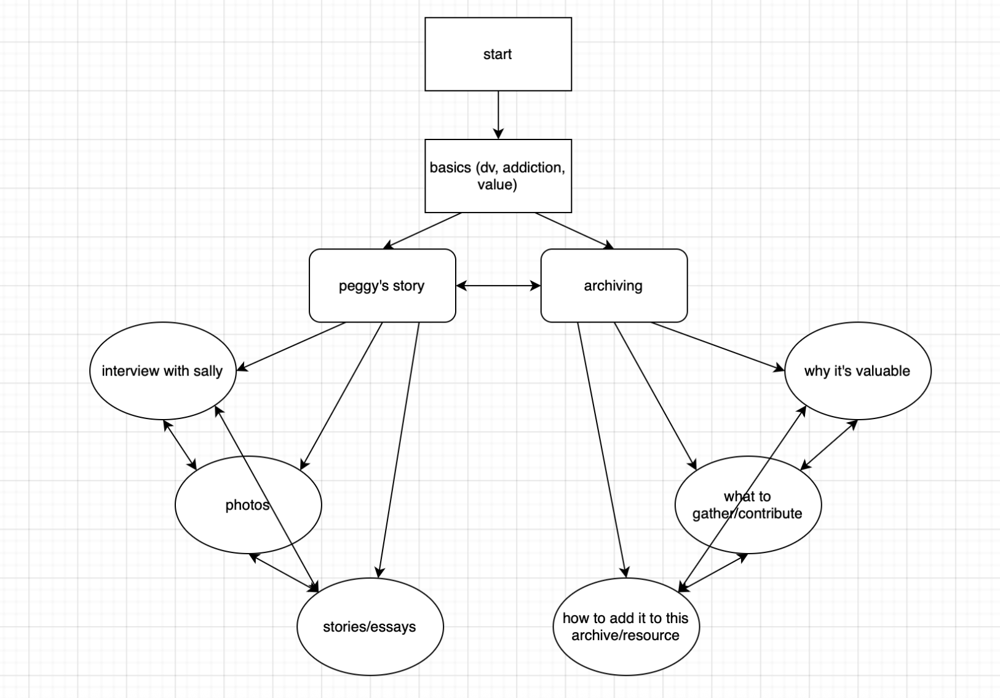

As a student and (forthcoming) professional, I have a very diverse set of skills and interests. This web page is an introduction into both my academic and professional pursuits, including my field of study, awards, current positions, and the potential futures I am envisioning for myself. I included many pictures including the people close to me, the activities I enjoy, and a conference I presented at. I didn't take many creative liberties with this assignment, but I did take the opportunity to change the colors of the site itself and saturation of the images. I also attempted changing the fonts, but because they are stored locally on my computer, it doesn't translate well to GitHub or sharing with other people.
A dollhouse
There are dress-up games and the Sims franchise, but there are no digital methods (that I know of) that replicate the feeling of being a child playing with dolls. I wanted to challenge Lev Manovich's idea in "The Language of New Media" that new media exists exclusively because it has been converted from old media. To do this, I wanted to combine something tangible (playing with dolls) with a form of digital media, so I could convey how different they are and what is gained and lost when they are used interchangably. This website is one page with a background of a dollhouse, and over top there are various images to represent the "dolls." When the user hovers over them, they shake, mimicking the action children use to make dolls interact with each other.
A song
"Empte" is a song by Skinny Puppy about the search for meaning and loneliness. I was inspired by Donna Haraway's "The Cyborg Manifesto," as it investigates the blurred line between human and machine and all of the implications of this, one of which is undeniably loneliness and lack of connection. On this website, the user clicks through the lyrics (indicated by a white glow when hovered over), moving through the song. In the case where there are two chunks of words that glow, the lyrics will take the user on a different path: the true, unedited lyrics or lyrics corrupted by being put through Google Translate multiple times. These two paths are supposed to respectively represent pursuing human connection and falling victim to the convenience of relying on machines.
Phase 1 Course Goals
1. Foster the creative habits of mind
I decided to really go outside of the box with these assignments to keep myself and my mind engaged. For the first assignment, I messed around with colors and saturation to make my website stand out visually. For the second, I wanted to come up with an exciting and (perhaps) novel comparison for our reading, something that functioned as more of a collage or art piece rather than what we traditionally imagine a website to be. For the third, I wanted to incorporate my own taste, and so I used a song I really like that I felt related to the reading in a way that broadened the meaning of the piece. (For this particular assignment, I pulled the background images and the drawing of the hands from the internet, but I colored the hands in myself to match the colors of the background, so I also incorporated my own art into the site.)
2. Engage with others in a workshop environment.
Since I have previous experience with HTML and CSS, I am able to help my peers by providing tricks and resources that might not otherwise be taught in an environment that isn't so much about teaching the languages themselves than making them work for us. It is also interesting to see what other people do and how differently we take the prompts. In the case of others who do utilize AI for the projects, it is cool to see the things they are learning and wonder how I can replicate them myself and learn from a tool without actually using it. I've abstained from using AI for any of my projects because while I am familiar with it and how to use it, I firmly believe that using an industry standard is not worth the environmental and humanitarian crises it exacerbates.
3. Think deeply about craft.
A couple semesters ago, I took an introductory class to HTML/CSS and JavaScript. I've messed with it since then, purely from scratch, but this class is giving me the opportunity to take excisting code, figure out what it's doing, and figure out how to get it do what I want. I'm revisiting old skills that I haven't been taught in an official capacity in a decent amount of time, so I am really figuring out which tools work best for me, which ways are the most efficient, and what resources I can use. For example, in the dollhouse project, it took me a really long time to figure out how to best position the "dolls," and while it definitely isn't perfect, I learned a lot about which units to use (vh, px, etc.) for certain goals.
4. Engage in sustained research and skills development.
Because I am (in a self-imposed way) more limited with the tools I can use, I have to learn in other ways. I referred to W3Schools and Stack Overflow a lot to learn about different methods of achieving a certain look and also problems other coders faced and how they might overcome them. I'm also very interested in the indie web, so I explored places like Neocities to look at creative and personal websites to learn what creative things I can do and reference their code. The readings for class also gave me a lot to consider and think about, and even took me beyond themselves. For example, with "A Cyborg Manifesto," I really wanted to look more into the modern ways humans are manifesting as cyborgs, and I learned a lot about our society's dependence on technology and how it impacts our day-to-day lives.
5. Learn to present your work
My websites are not the most accessible—the latter two especially, since they are more abstract in nature—but their simplicity makes them fairly usable once a user hovers over something. I am learning a lot about how to balance creativity with accessibility, and allowing myself to explore things that might not fulfill both of those requirements in order to fully understand what makes presentation sufficient and accessible. The dollhouse, for example, has no directions. While this embodies the real act of playing with dolls, it isn't sustainable for its medium. And the text on the song website isn't the most legible, but it speaks to the message I am trying to convey. My first website is definitely accessible, but I didn't have as much creative freedom. I know that there is a way for both of these things to coexist, and I am really looking forward to implementing these things in the future.
Phase 2/3: Expository Documentaries and Animation Effects
Image Essay
This is a series of images from my mom's family photo albums. The photos feature her, her brothers, and her parents, and have been carefully photographed and edited to create the most accurate digitized version of the photos themselves. While creating my image "essay" I used a variety of transitions, including a page turning animation, to experiment with the presentation of the images and how it might affect a viewer.
Video Essay
The B-Roll in this video is made up of a few shots of a few of the cats in my life. I chose the cats as my subject because they are so numerous and made it easy for me to test out different compositions, angles, and editing techniques.
After Effects Animation
For the animation, I created a slow rotation reveal of the name "Peggy," because that is the person my project is centered around. I think this could be used as a good title sequence for my final kiosk project if I speed it up, or, if it wouldn't conflict with the content, as a background.
Special Effects
I decided to go more experimental with my special effect instead of creating something specifically related to my final kiosk, similar to the video essay project. I created a glitch effect over a video of a surreal art exhibit, as I was prioritizing familiarizing myself with the software over creating content for my project.
Character Animation
I had a lot of fun with the character animation, and this was my final take of many. To bring clarity to myself and my project, I tried to make the information I said (via the character) as clear and concise as possible, which helped me narrow down what I am aiming for in the project.
Site Map

My site map is pretty cyclical, but I am very happy with the information it encompasses and how I can bring it to fruition. I am still debating whether or not I want Peggy's story and the template to be separate, but seeing it clearly laid out is helpful in my decision process.
Phase 2/3 Course Goals
1. Foster the creative habits of mind
As evidenced in multiple different assignments, I took this portion of the class to continue experimenting rather than entirely focusing in on my topics. I explored all the different tools we were provided using a bunch of different content, so I wasn't just making something for my project, but really learning the ins and outs of the software so I can be more creative later on with my final project. This also allowed me to continue thinking outside of the box and engaging with my own creativity, since I purposely strayed from my project.
2. Engage with others in a workshop environment
It was really interesting to see all the different effects and pieces my peers came up with. Since there was a lot of in-class work time and many very helpful tutorials, there wasn't as much opportunity to work through problems with others, but there were plenty of opportunities to share our work and compare and contrast what we all did. Seeing others' work, while it didn't offer any feedback on what I did, did inspire me and gave me ideas of what I could do in the future, and I like to think I did the same for other students.
3. Think deeply about craft
Although my assignments weren't all focused on my final project, and some of the editing, for example, seems a bit haphazard, this was intentional. I tried out a variety of different techniques on all of my assignments, and I chose to disply the ones I found most interesting or useful. Instead of following tutorials directly for certain assignments, I experimented with numerical values and orders of things to come up with something that wasn't just effective, but matched my vision. For example, in the glitch effect, I changed around a lot of the values and added more points of change in the effect.
4. Engage in sustained research and skills development.
Quite obvious during this section of work, we did a lot of research. I spent a lot of time online and in Pitt's archives researching material for my project and how I can create it, and I learned a lot about digitizing photos (which I implemented in the photo essay), curating an archive, and other ways to document and represent lives and people. I found some great resources from other libraries on how to develop archives and find documentation, and most importantly, how to put it all together.
5. Learn to present your work
Going off of my research, I learned how to present my work based on the curation of various archives and how they are presented. Workshopping and describing my "conjecture" also aided me in presenting my work in a clear way that highlights the most important part of my goals and how I plan to implement them. I was able to explain a lot of my ideas and work to people in completely separate fields with minimal understanding of some of my methods. My site map helps illustrate this, as do all the effects, as all of these things helped me figure out what will best display my point.
Phase 4: Presentation and Interactive Installation
This presentation outlines the importance of my project as well as how I hope to achieve my goals. In it, I provide domestic vioelence statistics, as well as related substance abuse statistics to express how prevelant these issues are. I go on to explain what my project is, how I plan to achieve my goals, and what my next steps are.
This interactive exhibit provides resources and an example archive for stories of victims of domestic violence. It is arranged so that users can explore wherever they want at any time, making it possible to observe Peggy's archive and reference provided resources almost simultaneously. It provides photos, text, external videos, and resources for those who might be active victims of domestic violence.
Phase 4 Course Goals
1. Foster the creative habits of mind
For this project, I really wanted to experiment with the delivery of documentation. Based on my research, it's very important that victims' stories are told, but I wanted to present it in a more accessible way that could provide more detail other than text. For that, I opted for this kiosk template that encourages people to create their own archive of various materials. I also tried to get the kiosk's interface to look at physical and tactile as possible, because I wanted to evoke the feelings of a physical archive at a library to emphasize that this is necessary documentation and an important part of history.
2. Engage with others in a workshop environment.
When we presented our kiosks to the class, I had the opportunity to receive feedback from my peers as well as provide them with feedback and learn more about their projects. It was great to hear what users liked about my project as well as where they thought I could improve. I was also able to congratulate my peers on their hard work, learn from them and how they made certain parts of their exhibit, as well as provide constructive criticism or assistance if they needed help with something.
3. Think deeply about craft.
I am extremely happy and proud to say that I coded the entirety of my kiosk exhibit myself. I worked extremely hard to problem solve when things were being finicky, and I ended up formatting it to look exactly the way I wanted it to after hours of trial and error. To do this, however, I needed a clear vision in mind before approaching coding, and I had to draw out multiple grid systems for each kind of page and code it accordingly. This was quite tricky, but I ended up achieving my goals.
4. Engage in sustained research and skills development.
This project is the culmination of many, many months of research. For this part of the project in particular, I had the opportunity to look into many other archives and how they are created and presented, and so the final product you see here is heavily influenced by other archives and historical artifacts. For example, I looked at a physical archive through the University Library System, and that is what inspired me to give my final kiosk website a more tactile-looking design. I also provided extensive data-driven research in my presentation, and I included a lot of my general archival and resource research in my exhibit.
5. Learn to present your work
My presentation outlines a clear and specific goal and outcome for my final kiosk, which I explained efficiently and comprehensively in only a few slides. The slides themselves only contain really important pieces of information so that my audience would pay attention to the words I was saying instead of reading the screen, and I did this because I created a specific speech. For my final kiosk, I had a quick introduction for users into what my project was, and then I encouraged them to explore on their own and then share their thoughts with me. They were able to explore the project themselves and have their own experience, but went in with a clear understanding of what was going on.